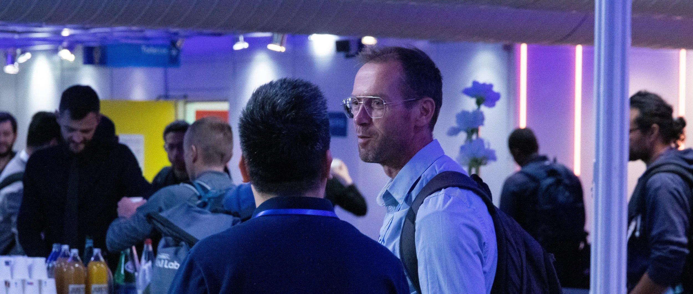
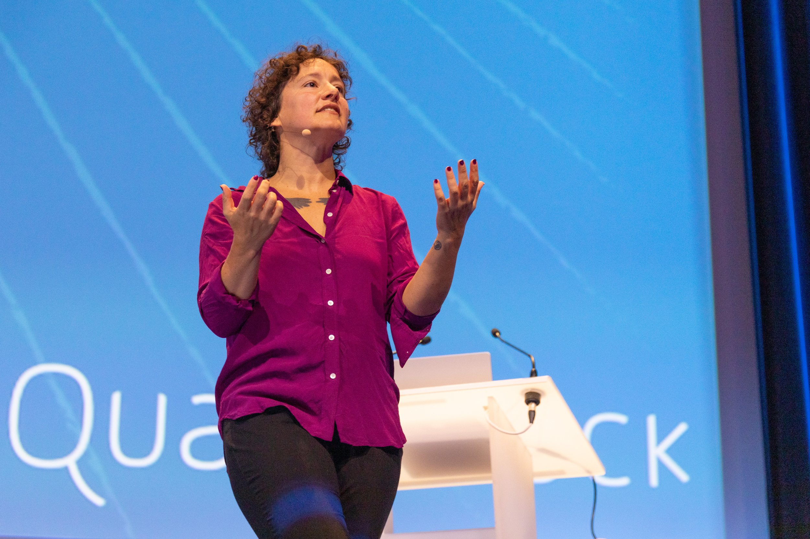
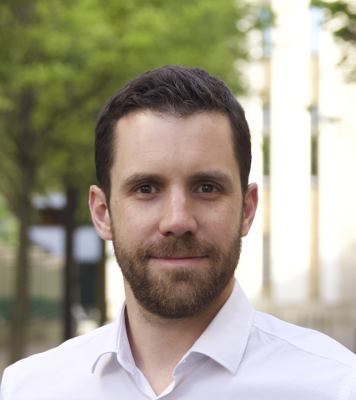
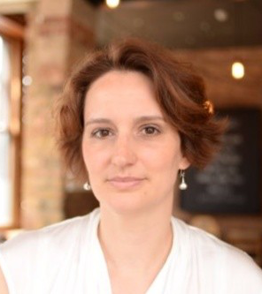
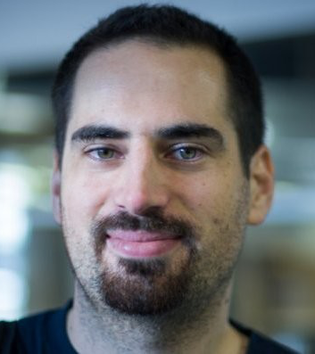

Compute! brings together academia, digital industry, and public institutions around a shared belief: understanding data and compute means agency in the digital world.

Compute! is a new annual conference with a conviction: understanding the tools and algorithms that make sense of data is what gives us agency in the digital world.
Blackbox answers are easier to come by than ever. But comprehension, knowledge, and trust in them? That's the hard part. And the interesting one.

From the organizers behind Jupyter, Apache Arrow, Mamba, Scikit-learn, and many more open source projects building our shared, powerful, accessible, and interpretable compute infrastructure.
We organize talks, workshops, and open source community tracks — dedicated side rooms where projects meet, grow, and find their people. The ecosystem, in one room.
Students, open source maintainers, seasoned professionals, and the people who decide how organizations use data.
Researchers, educators, PhD students, and scientific computing practitioners from universities and research institutes across Europe and beyond.
Engineers, data scientists, open source maintainers, startup founders, and technical leaders who build and depend on the compute stack every day.
Civil servants, policy analysts, public sector data teams, and decision-makers using computation in the service of society.
Practical depth across data analysis, visualization, reproducible science, domain-specific tools, educational approaches, collaborative workflows, and the ethics of data work.
Visionary keynotes and practical talks covering the full range of languages, platforms, and domains.
Immersive hands-on training taught by the engineers and researchers who wrote the code.
Side rooms for open source projects — organized by and for each community. Inspired by FOSDEM.
Collaborative sessions where contributors and newcomers work side by side on shared infrastructure.

Sylvain Corlay QuantStack
Sandrine Pataut QuantStack
Olivier Grisel :probabl.Whether you're a practitioner, educator, researcher, or open source maintainer — we want to hear from you.